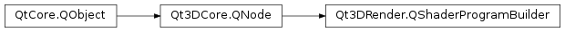

Qt3DRender.QShaderProgramBuilder¶
Note
This class was introduced in Qt 5.10.
Synopsis¶
Functions¶
- def
computeShaderGraph() - def
enabledLayers() - def
fragmentShaderGraph() - def
geometryShaderGraph() - def
shaderProgram() - def
tessellationControlShaderGraph() - def
tessellationEvaluationShaderGraph() - def
vertexShaderGraph()
Slots¶
- def
setComputeShaderGraph(computeShaderGraph) - def
setEnabledLayers(layers) - def
setFragmentShaderGraph(fragmentShaderGraph) - def
setGeometryShaderGraph(geometryShaderGraph) - def
setShaderProgram(program) - def
setTessellationControlShaderGraph(tessellationControlShaderGraph) - def
setTessellationEvaluationShaderGraph(tessellationEvaluationShaderGraph) - def
setVertexShaderGraph(vertexShaderGraph)
Signals¶
- def
computeShaderGraphChanged(computeShaderGraph) - def
enabledLayersChanged(layers) - def
fragmentShaderGraphChanged(fragmentShaderGraph) - def
geometryShaderGraphChanged(geometryShaderGraph) - def
shaderProgramChanged(shaderProgram) - def
tessellationControlShaderGraphChanged(tessellationControlShaderGraph) - def
tessellationEvaluationShaderGraphChanged(tessellationEvaluationShaderGraph) - def
vertexShaderGraphChanged(vertexShaderGraph)
Detailed Description¶
Generates a Shader Program content from loaded graphs.
A shader program builder consists of several different shader graphs used to generate shader code.
-
class
PySide2.Qt3DRender.Qt3DRender.QShaderProgramBuilder([parent=nullptr])¶ Parameters: parent – PySide2.Qt3DCore.Qt3DCore::QNode
-
PySide2.Qt3DRender.Qt3DRender.QShaderProgramBuilder.computeShaderGraph()¶ Return type: PySide2.QtCore.QUrlSee also
PySide2.Qt3DRender.Qt3DRender::QShaderProgramBuilder.setComputeShaderGraph()
-
PySide2.Qt3DRender.Qt3DRender.QShaderProgramBuilder.computeShaderGraphChanged(computeShaderGraph)¶ Parameters: computeShaderGraph – PySide2.QtCore.QUrl
-
PySide2.Qt3DRender.Qt3DRender.QShaderProgramBuilder.enabledLayers()¶ Return type: list of strings See also
PySide2.Qt3DRender.Qt3DRender::QShaderProgramBuilder.setEnabledLayers()
-
PySide2.Qt3DRender.Qt3DRender.QShaderProgramBuilder.enabledLayersChanged(layers)¶ Parameters: layers – list of strings
-
PySide2.Qt3DRender.Qt3DRender.QShaderProgramBuilder.fragmentShaderGraph()¶ Return type: PySide2.QtCore.QUrlSee also
PySide2.Qt3DRender.Qt3DRender::QShaderProgramBuilder.setFragmentShaderGraph()
-
PySide2.Qt3DRender.Qt3DRender.QShaderProgramBuilder.fragmentShaderGraphChanged(fragmentShaderGraph)¶ Parameters: fragmentShaderGraph – PySide2.QtCore.QUrl
-
PySide2.Qt3DRender.Qt3DRender.QShaderProgramBuilder.geometryShaderGraph()¶ Return type: PySide2.QtCore.QUrlSee also
PySide2.Qt3DRender.Qt3DRender::QShaderProgramBuilder.setGeometryShaderGraph()
-
PySide2.Qt3DRender.Qt3DRender.QShaderProgramBuilder.geometryShaderGraphChanged(geometryShaderGraph)¶ Parameters: geometryShaderGraph – PySide2.QtCore.QUrl
-
PySide2.Qt3DRender.Qt3DRender.QShaderProgramBuilder.setComputeShaderGraph(computeShaderGraph)¶ Parameters: computeShaderGraph – PySide2.QtCore.QUrlSee also
PySide2.Qt3DRender.Qt3DRender::QShaderProgramBuilder.computeShaderGraph()
-
PySide2.Qt3DRender.Qt3DRender.QShaderProgramBuilder.setEnabledLayers(layers)¶ Parameters: layers – list of strings See also
PySide2.Qt3DRender.Qt3DRender::QShaderProgramBuilder.enabledLayers()
-
PySide2.Qt3DRender.Qt3DRender.QShaderProgramBuilder.setFragmentShaderGraph(fragmentShaderGraph)¶ Parameters: fragmentShaderGraph – PySide2.QtCore.QUrlSee also
PySide2.Qt3DRender.Qt3DRender::QShaderProgramBuilder.fragmentShaderGraph()
-
PySide2.Qt3DRender.Qt3DRender.QShaderProgramBuilder.setGeometryShaderGraph(geometryShaderGraph)¶ Parameters: geometryShaderGraph – PySide2.QtCore.QUrlSee also
PySide2.Qt3DRender.Qt3DRender::QShaderProgramBuilder.geometryShaderGraph()
-
PySide2.Qt3DRender.Qt3DRender.QShaderProgramBuilder.setShaderProgram(program)¶ Parameters: program – PySide2.Qt3DRender.Qt3DRender::QShaderProgramSee also
PySide2.Qt3DRender.Qt3DRender::QShaderProgramBuilder.shaderProgram()
-
PySide2.Qt3DRender.Qt3DRender.QShaderProgramBuilder.setTessellationControlShaderGraph(tessellationControlShaderGraph)¶ Parameters: tessellationControlShaderGraph – PySide2.QtCore.QUrlSee also
PySide2.Qt3DRender.Qt3DRender::QShaderProgramBuilder.tessellationControlShaderGraph()
-
PySide2.Qt3DRender.Qt3DRender.QShaderProgramBuilder.setTessellationEvaluationShaderGraph(tessellationEvaluationShaderGraph)¶ Parameters: tessellationEvaluationShaderGraph – PySide2.QtCore.QUrlSee also
PySide2.Qt3DRender.Qt3DRender::QShaderProgramBuilder.tessellationEvaluationShaderGraph()
-
PySide2.Qt3DRender.Qt3DRender.QShaderProgramBuilder.setVertexShaderGraph(vertexShaderGraph)¶ Parameters: vertexShaderGraph – PySide2.QtCore.QUrlSee also
PySide2.Qt3DRender.Qt3DRender::QShaderProgramBuilder.vertexShaderGraph()
-
PySide2.Qt3DRender.Qt3DRender.QShaderProgramBuilder.shaderProgram()¶ Return type: PySide2.Qt3DRender.Qt3DRender::QShaderProgramSee also
PySide2.Qt3DRender.Qt3DRender::QShaderProgramBuilder.setShaderProgram()
-
PySide2.Qt3DRender.Qt3DRender.QShaderProgramBuilder.shaderProgramChanged(shaderProgram)¶ Parameters: shaderProgram – PySide2.Qt3DRender.Qt3DRender::QShaderProgram
-
PySide2.Qt3DRender.Qt3DRender.QShaderProgramBuilder.tessellationControlShaderGraph()¶ Return type: PySide2.QtCore.QUrlSee also
PySide2.Qt3DRender.Qt3DRender::QShaderProgramBuilder.setTessellationControlShaderGraph()
-
PySide2.Qt3DRender.Qt3DRender.QShaderProgramBuilder.tessellationControlShaderGraphChanged(tessellationControlShaderGraph)¶ Parameters: tessellationControlShaderGraph – PySide2.QtCore.QUrl
-
PySide2.Qt3DRender.Qt3DRender.QShaderProgramBuilder.tessellationEvaluationShaderGraph()¶ Return type: PySide2.QtCore.QUrlSee also
PySide2.Qt3DRender.Qt3DRender::QShaderProgramBuilder.setTessellationEvaluationShaderGraph()
-
PySide2.Qt3DRender.Qt3DRender.QShaderProgramBuilder.tessellationEvaluationShaderGraphChanged(tessellationEvaluationShaderGraph)¶ Parameters: tessellationEvaluationShaderGraph – PySide2.QtCore.QUrl
-
PySide2.Qt3DRender.Qt3DRender.QShaderProgramBuilder.vertexShaderGraph()¶ Return type: PySide2.QtCore.QUrlSee also
PySide2.Qt3DRender.Qt3DRender::QShaderProgramBuilder.setVertexShaderGraph()
-
PySide2.Qt3DRender.Qt3DRender.QShaderProgramBuilder.vertexShaderGraphChanged(vertexShaderGraph)¶ Parameters: vertexShaderGraph – PySide2.QtCore.QUrl
© 2018 The Qt Company Ltd. Documentation contributions included herein are the copyrights of their respective owners. The documentation provided herein is licensed under the terms of the GNU Free Documentation License version 1.3 as published by the Free Software Foundation. Qt and respective logos are trademarks of The Qt Company Ltd. in Finland and/or other countries worldwide. All other trademarks are property of their respective owners.